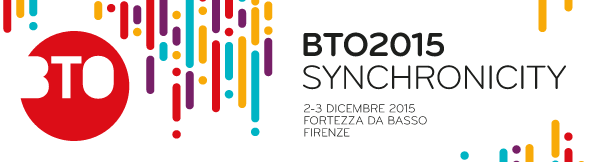
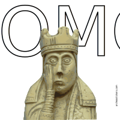
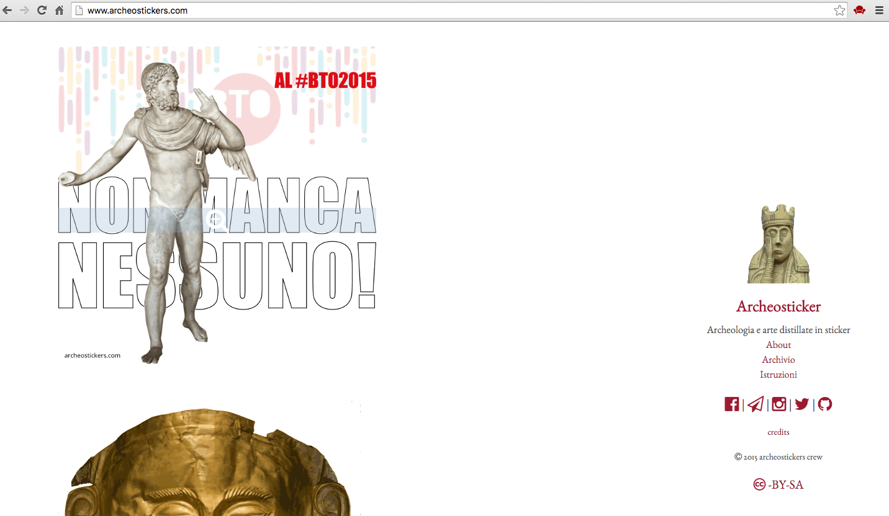
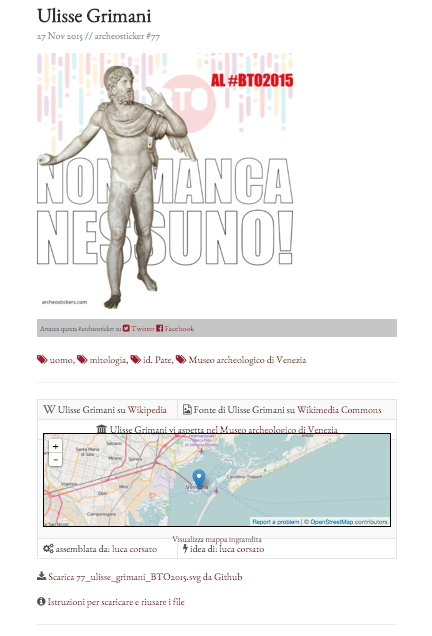
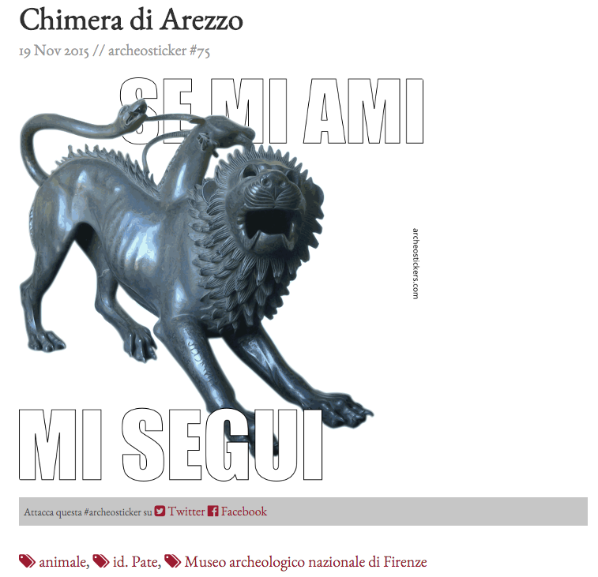
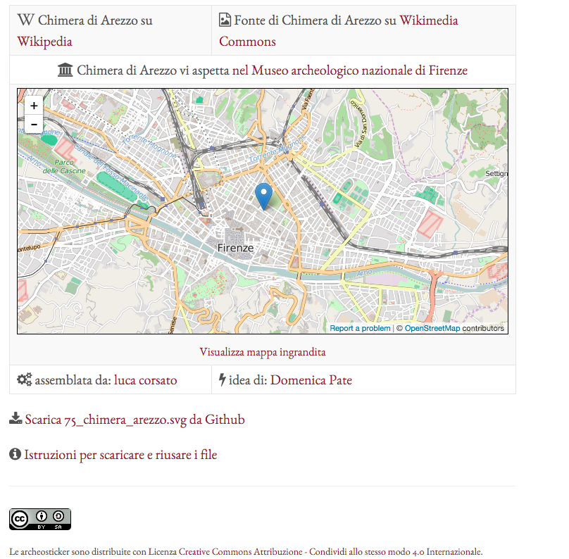
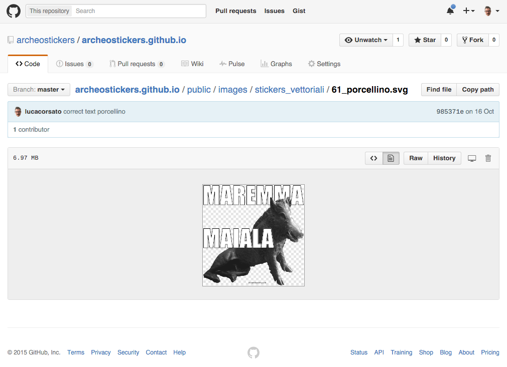
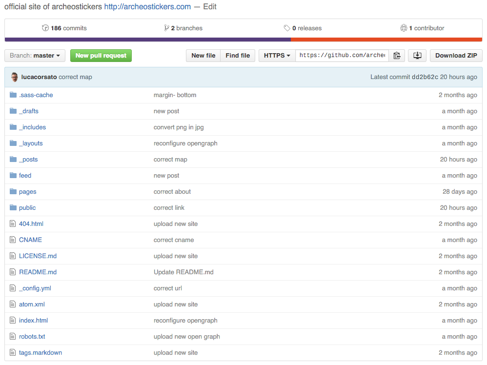

| Da Winckelmann agli Squallor | by osd |
|---|
Da Winckelmann agli Squallor
liberare, dissacrare, riusare e ricontestualizzare la cultura
2 dicembre 2015 Buy Tourism Online
| luca corsato | Barbara Marcotulli | Luca Melchionna | Domenica Pate |
|---|---|---|---|
| @lucacorsato | @CurlyBB | @lmelk | @domenica_pate |
| Da Winckelmann agli Squallor | by osd |
|---|
Sono luca corsato
un povero opendataro ed assieme ad Andrea e Simone (ed altri monelli) ci divertiamo con opensensorsdata
ognuno può condividere dati e informazioni; ognuno, ad ogni estremità della rete, può offrire servizi costruiti su di essa. […] I margini della rete non sono punti dove il suo valore finisce, ma dove comincia a manifestarsi.
| Da Winckelmann agli Squallor | by osd |
|---|
Oggi vi parliamo di questi servizi
e come miscelarli in maniera divertente (e utile) per voi e per chi vi sta vicino
| Da Winckelmann agli Squallor | by osd |
|---|
Super Open Combo
| Wikipedia | Wikimedia Commons | OpenStreetMap | Github |
|---|---|---|---|
informazioni |
multimedia |
mappe |
codice |
Tutto open ma per fare cosa?
| Da Winckelmann agli Squallor | by osd |
|---|
L'archeologia offre grandi spunti
Che città ha scoperto Schliemann?
| Da Winckelmann agli Squallor | by osd |
|---|
www.archeostickers.com
di
| osd | Professione Archeologo | ArcheoPop |
|---|---|---|
le archeologhe che ne sanno a pacchi
Astrid D'Eredità // Antonia Falcone // Domenica Pate // Paola Romi
| Da Winckelmann agli Squallor | by osd |
|---|
un sito web, un repository
| Da Winckelmann agli Squallor | by osd |
|---|
un'archeosticker, una scheda
| Da Winckelmann agli Squallor | by osd |
|---|
da dati aperti e riusabili alle stesse Archeostickers aperte e riusabili
 | Da Winckelmann agli Squallor | by osd |
|---|
Social Coding: è sempre una questione di linguaggi e codice
 {kind=link}
| Da Winckelmann agli Squallor | by osd |
|---|
Le archeostickers sono
- un riuso massiccio di dati (archeologici) -
- sticker per messaggi tra le persone -
- iconologia giocosa sull'opera o sul soggetto -

| Da Winckelmann agli Squallor | by osd |
|---|
PORCELLINOBOT
https://telegram.me/porcellinobot
comunicare tra oggetti, luoghi e persone


Sviluppato in collaborazione con CNR-Ibimet
| Da Winckelmann agli Squallor | by osd |
|---|
TRADURRE E INTERPRETARE DATI ORIGINATI DA DATABASE, SENSORI E PERSONE
è possibile
solo
con la condivisione delle competenze
| Da Winckelmann agli Squallor | by osd |
|---|
su questo, interroghiamo
| Barbara | Luca | Domenica |
|---|---|---|
| service designer sapiente | giornalista-istruttore | archeologa-archeognock |
| Da Winckelmann agli Squallor | by osd |
|---|
Voi su cosa intervenite?

| Da Winckelmann agli Squallor | by osd |
|---|
il miglior coinvolgimento è la curiosità per il prossimo
Come allenate la vostra curiosità e quella degli altri?

| Da Winckelmann agli Squallor | by osd |
|---|
mettere in relazione la propria singolarità con quella degli altri
Cosa fai riusare di tuo per aiutare gli altri a lavorare con te?

| Da Winckelmann agli Squallor | by osd |
|---|
Perché devono investire sulla tua professionalità?
| Da Winckelmann agli Squallor | by osd |
|---|
Grazie, siete preziosi!

| Da Winckelmann agli Squallor | by osd |
|---|
JAMMUCENNE!

Credits
Da Winckelmann agli Squallor è un intervento
del 2 dicembre 2015 al BTO - Buy Tourism Online
Musiche di Squallor:
- Concerto all'aperto (Cappelle, CGD 1978)
- Jammucenne (Tocca l'albicocca, Dischi Ricordi 1985)
Il PorcellinoBot è frutto della collaborazione tra
grazie alla follia di Antonio Raschi e Alfonso Crisci
Le Archeostickers sono un prodotto di
opensensordata con Professione Archeologo e ArcheoPop
sono riusabili e scaricabili qui e qui
con licenza CC-BY-SA
per scaricare in pdf seguite le istruzioni
queste slide sono realizzate con reveal.js